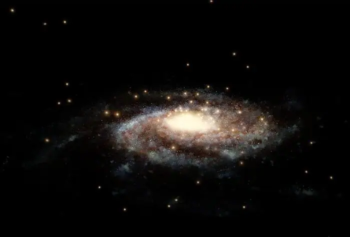

Science news ·
Study: a new estimate of the mass of the Milky Way
Translated from the Arabic original. اقرأ النص الأصلي بالعربية
Prepared by Eng. Majed Abu Zahra
The Milky Way galaxy is estimated to contain about 200 billion stars, and not only that: our galaxy is also surrounded by huge amounts of an unknown material called dark matter. Astronomers know it exists because the Milky Way would scatter into space if dark matter did not keep a gravitational hold on things.
Even so, astronomers want an accurate measurement of the galaxy's mass to better understand how the countless galaxies in the universe form and evolve.
So a team of researchers from the European Southern Observatory, the Space Telescope Science Institute, the Center for Astrophysical Sciences at Johns Hopkins University and the University of Cambridge collected observations with the Hubble Space Telescope as well as the "Gaia" satellite in order to study the motions of the globular star clusters that orbit our galaxy. The faster the clusters move under the galaxy's gravity, the more massive it is. The results were published in the Astrophysical Journal.
The team concluded that the Milky Way has a mass of 1.54 trillion solar masses, most of it locked up in dark matter. This new estimate places the Milky Way on the heavy side compared with other galaxies in the universe.
The lightest galaxies are about a billion solar masses, while the heaviest reach 30 trillion, or more than 30,000 times that. The Milky Way's mass of 1.5 trillion solar masses is fairly normal for a galaxy of its brightness.
Previous measurements of the Milky Way's mass ranged from 500 billion to 3 trillion solar masses. This large difference arose mainly from the different methods used to measure the distribution of dark matter, which makes up about 90% of the galaxy's mass.

Dark matter is known not to be directly detectable, and this leads to uncertainty in earlier estimates of the Milky Way's mass, so we cannot accurately measure what cannot be seen.
So, given the elusive nature of dark matter, scientists had to use a clever method to "weigh" the Milky Way, relying on measuring the speeds of the globular clusters that orbit the galaxy's disc from great distances: the more massive the galaxy, the faster its clusters move under the influence of its gravity.
Most earlier measurements found that the speed at which a globular star cluster moves, whether approaching or receding from the Earth, is a speed along our line of sight. However, scientists were also able to measure the clusters' sideways motion, from which the total speed can be calculated, and hence the mass of the galaxy.
The scientists used the second data release of the "Gaia" satellite, published recently, which includes measurements of globular clusters up to 65,000 light years from the Earth, as the basis of their study, since globular clusters are the best tool astronomers use to measure a galaxy's mass.
Observations from the Hubble Space Telescope of faint, distant globular star clusters up to 130,000 light years from the Earth allowed them to be added to the study, and since Hubble had been monitoring some of these objects for ten years it was possible to track the speeds of these globular clusters accurately.
So scientists have a large body of data. By combining the "Gaia" satellite's measurements, covering 34 globular star clusters, with measurements of 12 other distant star clusters by the Hubble telescope, the mass of the Milky Way could be determined in a way that would have been impossible without these two space observatories.